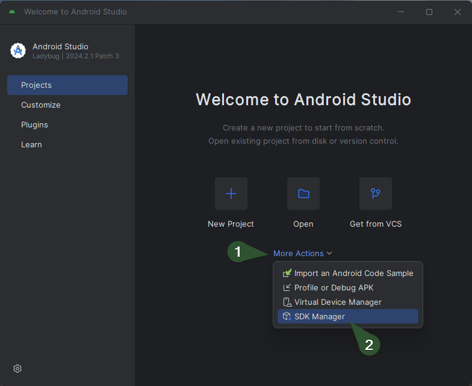
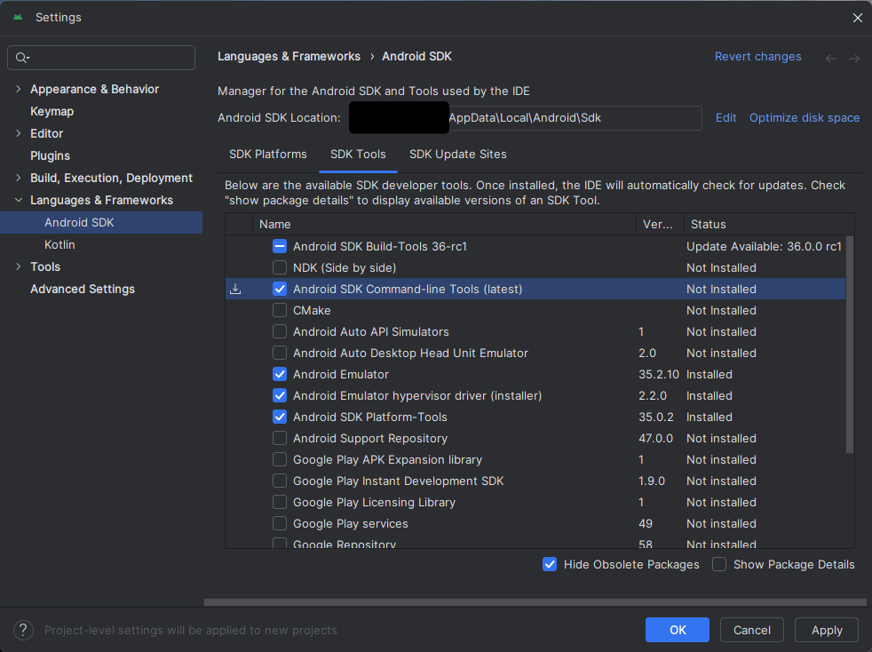

Flutter
Používá se pro vývoj mobilních aplikací pro Android a iOS.
Využívá Dart jako programovací jazyk.
Instalace a vytvoření nového projektu
Instalace
Important
Flutter používá Git pro správu závislostí, takže je potřeba mít nainstalovaný Git.
Important
Flutter vyžaduje nainstalovaný Android Studio pro vývoj aplikací pro Android.
Windows
Stáhnout Flutter SDK z oficiálních stránek
Rozbalit ZIP soubor do složky, například:
C:\src\flutterImportant
Cesta nesmí obsahovat mezery nebo speciální znaky
Přidat cestu k adresáři
flutter\bindo proměnného prostředíPATHSpuště nyní kontrolu zda je vše správně nastaveno:
flutter doctorPříkaz pro vypnutí analyzování:
flutter config --no-analytics
Tip
Pro kontrolu veškerého nastavení:
flutter config
Android toolchain - develop for Android devices
- Ujistěte se, že je nainstalován
Android Studio - 
- 
Prohlížeč pro vývoj webových aplikací
Pokud chcete používat jiný prohlížeč než Google Chrome:
flutter config --no-web-browser
Použijte
flutter run -d web-serverOtevřete ve vlastním prohlížeči a zadejte adresu
http://localhost:PORT/
Vytvoření nového projektu
flutter create project_name
Nyní můžete spustit aplikaci:
cd project_name
flutter run
Záloha a obnova
Záloha závislostí
Pro zálohování všech balíčků projektu při použití flutter pub get, můžete zálohovat složku .pub-cache, která obsahuje všechny stažené závislosti.
- Windows:
C:\Users\<uživatelské_jméno>\AppData\Local\Pub\Cache - macOS a Linux:
/Users/<uživatelské_jméno>/.pub-cache
Tip
Složka hosted obsahuje všechny balíčky stažené z veřejných (například: pub.dev) nebo soukromých repozitářů. (Hlavní úložiště pro závislosti projektu.)
Složka hosted-hashes obsahuje hash soubory, které slouží k ověření integrity balíčků uložených ve složce hosted. (Zajišťuje, že balíčky nebyly změněny.)
Složka temp obsahuje dočasné soubory, které jsou vytvořeny během stahování balíčků a jsou odstraněny po dokončení stahování.
Obnova závislostí
Pro obnovení všech balíčků projektu zálohovaných v .pub-cache, stačí obnovit obsah složky .pub-cache do původního umístění.
- Windows:
C:\Users\<uživatelské_jméno>\AppData\Local\Pub\Cache - macOS a Linux:
/Users/<uživatelské_jméno>/.pub-cache
Tip
Složka hosted obsahuje všechny balíčky stažené z veřejných (například: pub.dev) nebo soukromých repozitářů. (Hlavní úložiště pro závislosti projektu.)
Složka hosted-hashes obsahuje hash soubory, které slouží k ověření integrity balíčků uložených ve složce hosted. (Zajišťuje, že balíčky nebyly změněny.)
Složka temp obsahuje dočasné soubory, které jsou vytvořeny během stahování balíčků a jsou odstraněny po dokončení stahování.
Základní znalosti
Widget
Widget je základní stavební prvek Flutter aplikace a je zodpovědný za vykreslení uživatelského rozhraní.
Každý widget je buď StatelessWidget nebo StatefulWidget.
StatelessWidget- neměnný widget, který se nemění během životního cyklu aplikaceclass MyStatelessWidget extends StatelessWidget { @override Widget build(BuildContext context) { return Scaffold( appBar: AppBar( title: Text('Stateless Widget Example'), ), body: Center( child: Text('This is a stateless widget'), ), ); } }StatefulWidget- měnný widget, který se může měnit během životního cyklu aplikace// A StatefulWidget is a widget that has mutable state. class MyStatefulWidget extends StatefulWidget { @override _MyStatefulWidgetState createState() => _MyStatefulWidgetState(); } // This is the state class for MyStatefulWidget. // It holds the state of the widget and contains the logic to update the state. class _MyStatefulWidgetState extends State<MyStatefulWidget> { int _counter = 0; // This method increments the counter and calls setState to update the UI. void _incrementCounter() { setState(() { _counter++; }); } @override Widget build(BuildContext context) { return Scaffold( appBar: AppBar( title: Text('Simple Stateful Widget Example'), ), body: Center( child: Column( mainAxisAlignment: MainAxisAlignment.center, children: <Widget>[ Text('You have pushed the button this many times:'), Text('$_counter'), ], ), ), floatingActionButton: FloatingActionButton( onPressed: _incrementCounter, tooltip: 'Increment', child: Icon(Icons.add), ), ); } } void main() { runApp(MaterialApp( home: MyStatefulWidget(), )); }
Příkazy
Tabulka s příkazy
| Kategorie | Příkaz | Popis |
|---|---|---|
| Verze a kanály | flutter --version |
Zobrazí aktuální verzi Flutter SDK, Dart SDK a aktivní kanál. |
flutter upgrade |
Aktualizuje Flutter SDK na nejnovější verzi v aktuálním kanálu. | |
flutter downgrade |
Vrátí Flutter SDK na předchozí verzi. | |
flutter channel |
Zobrazí aktuální kanál a seznam dostupných kanálů (stable, beta, dev, master). | |
flutter channel stable |
Přepne na stabilní kanál. | |
flutter channel beta |
Přepne na beta kanál. | |
| Diagnostika | flutter doctor |
Zkontroluje nastavení Flutteru a zobrazí seznam chybějících nebo nesprávně nastavených komponent. |
flutter doctor -v |
Detailní výstup diagnostiky Flutteru. | |
| Závislosti | flutter pub get |
Stáhne závislosti uvedené v souboru pubspec.yaml. |
flutter pub upgrade |
Aktualizuje všechny závislosti na nejnovější kompatibilní verze. | |
flutter pub cache repair |
Opraví a znovu stáhne závislosti uložené v cache. | |
| Projektové příkazy | flutter create project_name |
Vytvoří nový Flutter projekt ve složce project_name. |
flutter run |
Spustí aplikaci na připojeném zařízení nebo emulátoru. | |
flutter build apk |
Vytvoří produkční APK soubor aplikace. | |
flutter build ios |
Vytvoří produkční build pro iOS (vyžaduje macOS a Xcode). | |
flutter clean |
Odstraní dočasné soubory a vyčistí build cache. | |
flutter test |
Spustí všechny testy definované v projektu. | |
| Zařízení a emulátory | flutter devices |
Zobrazí seznam připojených zařízení a dostupných emulátorů. |
flutter emulators |
Zobrazí seznam dostupných emulátorů. | |
flutter emulators --launch emulator_id |
Spustí specifický emulátor podle jeho ID. | |
flutter install |
Nainstaluje aplikaci na připojené zařízení. | |
| Analýza a opravy | dart analyze |
Spustí analýzu kódu na projektu a zobrazí potenciální chyby nebo varování. |
dart fix --apply |
Aplikuje doporučené opravy kódu podle výsledků analýzy. | |
| Logy | flutter logs |
Zobrazí logy aplikace z běžící instance Flutteru. |
Balíčky
Lokalizace (interní knihovna)
Přidání závislosti do souboru
pubspec.yaml:Přidejte
flutter_localizationsviz. níže:dependencies: # Internal dependencies flutter: sdk: flutter flutter_localizations: sdk: flutter # External dependencies cupertino_icons: ^1.0.8 flutter_svg: ^2.0.16Vytvořte lokalizační soubory
lib/l10n/intl_en.arb, příklad souboru pro anglické texty{ "@@locale": "en", "hello": "Hello", "welcome": "Welcome" }lib/l10n/intl_cs.arb, příklad souboru pro české texty{ "@@locale": "cs", "hello": "Ahoj", "welcome": "Vítejte" }
Note
@@locale, definuje jazykovou verzi překladu obsaženou v souboru.arb.Tip
Pokud chcete nastavit výchozí lokalizační soubor bez nutnosti mít
intl_messages.arb, musíte nastavit výchozí jazyk ve vašem Flutter kódu.// Material design for applications import 'package:flutter/material.dart'; // Localization import 'package:flutter_localizations/flutter_localizations.dart'; import 'generated/l10n.dart'; void main() { runApp(MyApp()); } class MyApp extends StatelessWidget { @override Widget build(BuildContext context) { return MaterialApp( localizationsDelegates: [ S.delegate, GlobalMaterialLocalizations.delegate, GlobalWidgetsLocalizations.delegate, GlobalCupertinoLocalizations.delegate, ], supportedLocales: S.delegate.supportedLocales, locale: Locale('cs'), // Nastavení výchozího jazyka na češtinu home: MainPage(), ); } }Vygenerovat potřebné lokalizační soubory
Přidejte
intl_utilsdo konfiguračního souboru (pubspec.yaml):dependencies: # Internal dependencies flutter: sdk: flutter flutter_localizations: sdk: flutter # External dependencies intl_utils: ^2.5.0 cupertino_icons: ^1.0.8 flutter_svg: ^2.0.16Spusťte následující příkaz:
# Install the dependencies listed in pubspec.yaml dart pub get # Generate the necessary localization files based on the ARB files dart run intl_utils:generateZobrazení textu z lokalizace
import 'package:flutter/material.dart'; // Import package for material design import 'package:flutter_localizations/flutter_localizations.dart'; // Import package for localization import 'generated/l10n.dart'; // Import generated localization file void main() { // Spuštění aplikace runApp(MyApp()); } class MyApp extends StatelessWidget { @override Widget build(BuildContext context) { return MaterialApp( // Definování delegátů pro lokalizaci localizationsDelegates: [ S.delegate, // Vlastní generovaný delegát pro lokalizaci GlobalMaterialLocalizations.delegate, // Material design lokalizace GlobalWidgetsLocalizations.delegate, // Widgety lokalizace GlobalCupertinoLocalizations.delegate, // Cupertino (iOS) lokalizace ], // Podporované jazyky supportedLocales: S.delegate.supportedLocales, // Hlavní stránka aplikace home: MainPage(), ); } } class MainPage extends StatelessWidget { @override Widget build(BuildContext context) { return Scaffold( appBar: AppBar( // Zobrazení lokalizovaného textu v AppBar title: Text(S.of(context).hello), ), body: Center( // Zobrazení lokalizovaného textu v těle stránky child: Text(S.of(context).welcome), ), ); } }
Pokrytí kódů (Code Coverage)
Bez nahlédnutí do zdrojového kódu
Nainstalujte balíček skrze npm:
npm install -g @lcov-viewer/cliVytvořte nový soubor
package.jsons výchozími hodnoty:npm init -yVaše konfigurace bude vypadat podobně takto:
{ "name": "xxx_app", "version": "1.0.0", "description": "A new Flutter project.", "main": "index.js", "directories": { "lib": "lib", "test": "test" }, "scripts": { "test-report": " flutter test --coverage && lcov-viewer lcov -o ./coverage/report ./coverage/lcov.info" }, "keywords": [], "author": "", "license": "ISC" }Spusťte příkaz:
npm run test-report
S nahlédnutím do zdrojového kódu
Stáhněte si soubor
genhtmlDejte soubor do kořenové složky projektu
Ujistěte se, že máte nainstalovaný
Git BashNote
S tím se nainstaluje i perl, který je potřeba pro správné fungování
genhtml.Spusťte příkaz v Git Bash:
where perlSpusťte následující příkaz v Git Bash v kořenové složce projektu:
perl genhtml coverage/lcov.info -o coverage/html
Řešení problémů
Building with plugins requires symlink support.
Pokud se vyskytne chyba Building with plugins requires symlink support. při spuštění aplikace, je potřeba povolit
Developer Mode v systému Windows.
- Stiskněte klávesovou zkratku
Win + R - Zadejte
ms-settings:developersa stiskněteEnter - Povolte
Developer Mode